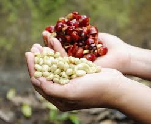
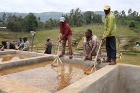
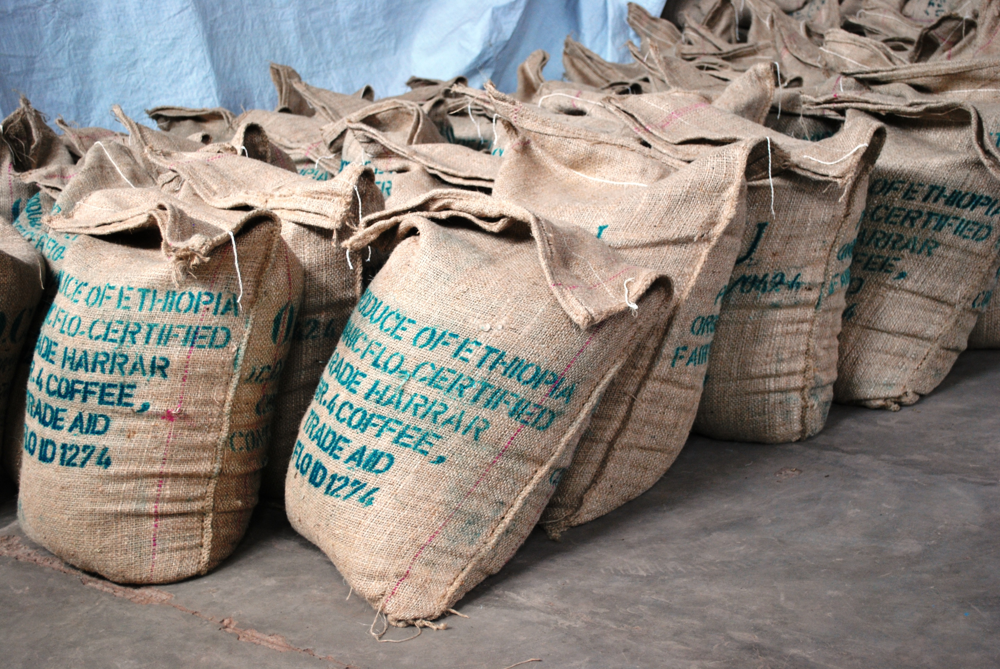

Coffee grows on trees!
More like bushes, but theyre refered to as trees
Coffee grows in Central and South America, Africa, Asia, and Indonesia. Currently Brazil grows the most.

Here you can see the ripe coffee cherries before they are picked form the tree. The majority of the world picks these by hand!!

Cherries are then processed in a few different ways, to get to the seed in the center, we refer to it as a bean.
Process that coffee! Yes your coffee is FERMENTED
Beans can be processed in a few different ways, though here we will cover only the most common. The idea is to ferment the fruit of the coffee to gain access to the center seed.
The oldest method is the dry process. Coffee is simply left to dry in the sun. The fruit is mixed thoughout to promote even drying. Eventuallty the fruit is able to be removed from the seed. This can produce intense fruit like flavors but also has a great chance of producing off flavors like funk and feremnt.
Here you can see the seed, after it has been mechanically stripped of its fruit. Exposing the seed, surrounded by musilage. This will be removed in the fermentation process.

After removing the fruit, the musilage coffee is then left to ferement in water for around 24hours. A much more controlled process, the result is a much cleaner tasting coffee
Here you can see the seed is incased in a papery layer referred to as parchment. Bags of coffee are stored in a wharehouse, and before export they are run through a machine to remove this parchment. Then bagged and shipped all over the world.
